Le module qui relie les mathématiques à l’intelligence artificielle : de NumPy et de l’analyse de données jusqu’aux réseaux de neurones convolutifs et aux Transformers. Chaque notion est travaillée dans un notebook Python, et mes résultats sont repris ici.
Ce que j’y ai appris
Explorer des données
Nettoyer, filtrer et visualiser avec pandas, matplotlib et seaborn, et mesurer ce que coûte vraiment le calcul parallèle.
Les maths des modèles
ACP par valeurs propres, régression par équation normale et par descente de gradient codée de zéro.
Classer et évaluer
Régression logistique, arbres et forêts, matrice de confusion, rappel, précision et courbe ROC.
Réseaux de neurones
Du perceptron et du XOR jusqu’aux CNN, LSTM et Transformers avec Keras.
Le lien avec mon projet
Ces notions servent directement dans la SAE Astraeus, où je m’occupe du modèle de prévision météo (un LSTM) du jeu WeatherGuessr.
Detailed write-ups and revision notes are in French: they are my own study notes.
Mes TD et leurs résultats
Les chiffres et les graphiques viennent de mes notebooks. Les démos refont les calculs dans ton navigateur, avec le même code traduit en JavaScript ; quand un résultat a été réentraîné ou relancé pour cette page, c’est indiqué.
Python, NumPy, parallélisme et analyse exploratoire
Trois exercices : bases NumPy, comparaison des bibliothèques de calcul parallèle, puis analyse exploratoire de données (EDA) avec pandas, matplotlib et seaborn.
Les opérations NumPy, résultats de mon notebook
Paralléliser n’est pas toujours plus rapide
Créer des processus ou des threads coûte cher : sur de petites tâches, ce coût fixe écrase le gain du parallélisme. Joblib ou multiprocessing ne deviennent rentables que sur de gros calculs (essayer avec 10⁶ éléments). Et np.vectorize n’est qu’une boucle Python déguisée : la vraie vectorisation, ce sont les opérations NumPy natives.
Analyse exploratoire : mes scripts relancés
Mes scripts VideoGamesDataAnalysis.py et nbaDataAnalysis.py, exécutés tels quels pour cette page, et un graphique du notebook (boîte à moustaches sur l’enquête INCA2).
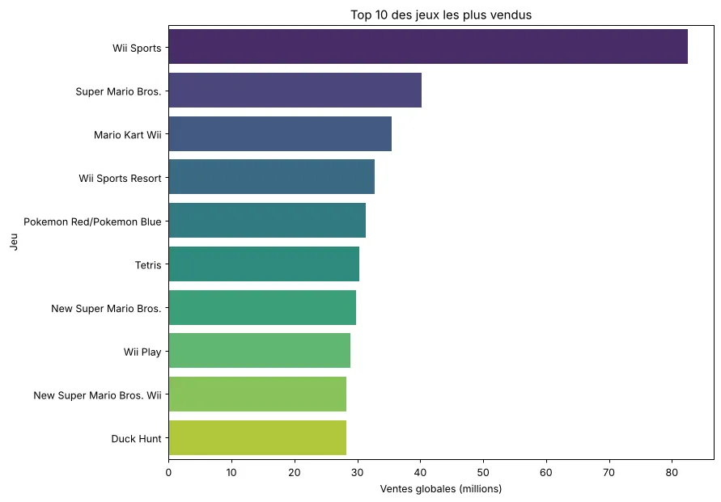
nlargest(10, "Global_Sales") puis barplot.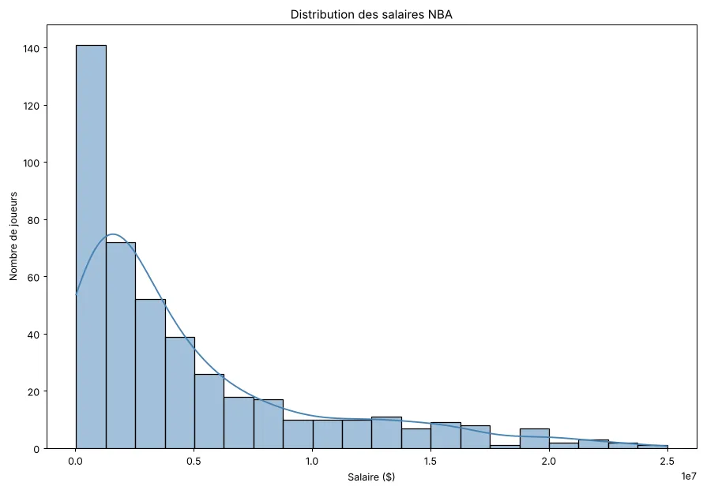
kde=True), une distribution très asymétrique.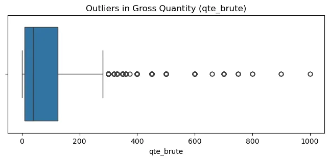
qte_brute (INCA2) : tout point au-delà de 1,5 × l’écart interquartile.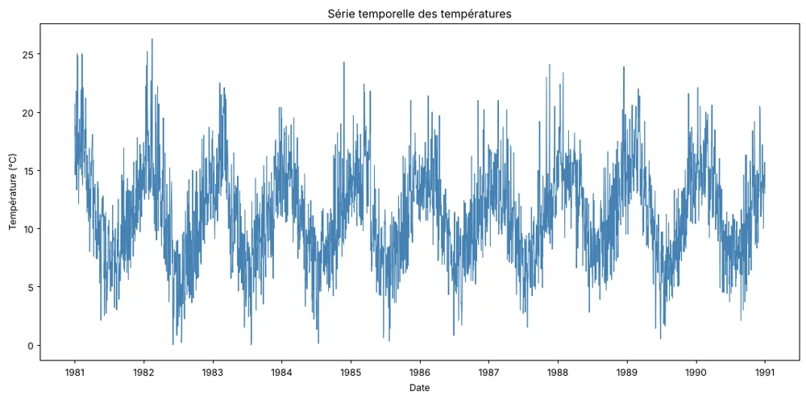
- Axe illisible : dans
Video_Games.csv,User_Scorecontient « tbd » ; pandas lit donc la colonne comme du texte et le nuage de points trie les notes comme des mots. Il fautpd.to_numeric(df["User_Score"], errors="coerce")avant de tracer. - Camembert à 30 parts : la masse salariale par équipe devient illisible. Mon propre résumé du TD le dit : camembert = peu de catégories ; ici, des barres triées.
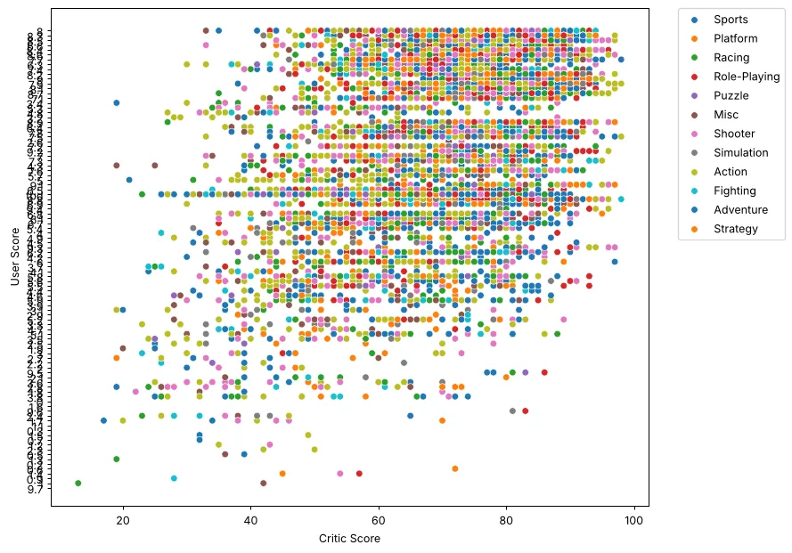
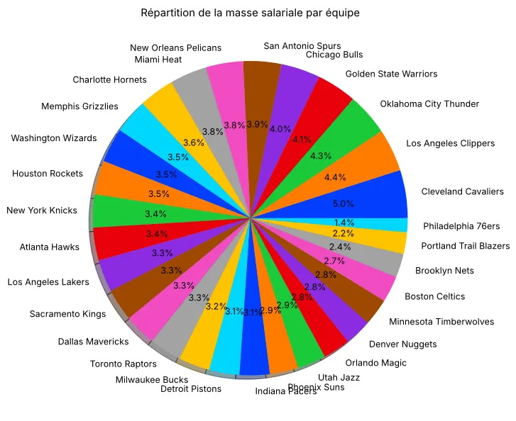
Réduction de dimension : l’ACP
Iris et Wine, puis compression et débruitage d’une image. Le notebook est titré « TD 2 » dans le sujet.
wine = pd.read_csv('wine.csv')
X = wine.drop(columns=['Wine'])
y = wine['Wine']
# Standardisation (indispensable : les échelles diffèrent
# énormément, ex. Proline ~1000 vs Hue ~1)
scaler = StandardScaler()
X_scaled = scaler.fit_transform(X)
n_features = X.shape[1]
pca = PCA(n_components=n_features)
pca_values = pca.fit_transform(X_scaled)
var = pca.explained_variance_ratio_
var1 = np.cumsum(np.round(var, decimals=4) * 100)
# Nombre de composantes pour atteindre 90% de variance
n_90 = np.argmax(var1 >= 90) + 1
print(f"{n_90} composantes suffisent pour expliquer >= 90% de la variance.")
Démo : l’ACP recalculée dans le navigateur
Même chaîne que le notebook : standardisation (comme StandardScaler), matrice de covariance, valeurs et vecteurs propres (méthode de Jacobi), projection sur PC1 et PC2. Sur Wine, on retrouve exactement 36,20 % et 19,21 % (le signe d’un axe est arbitraire : une composante peut ressortir inversée par rapport au notebook).
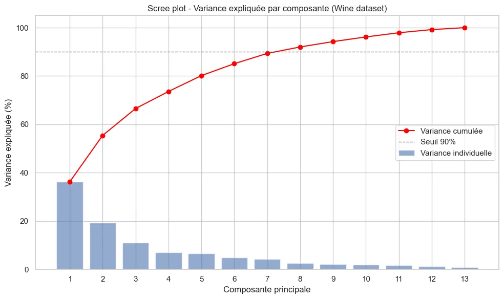
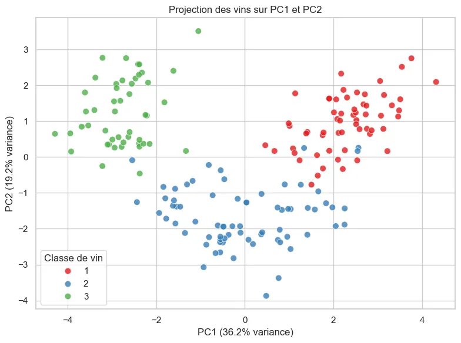
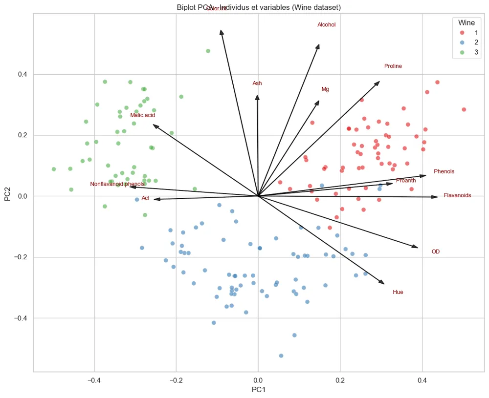
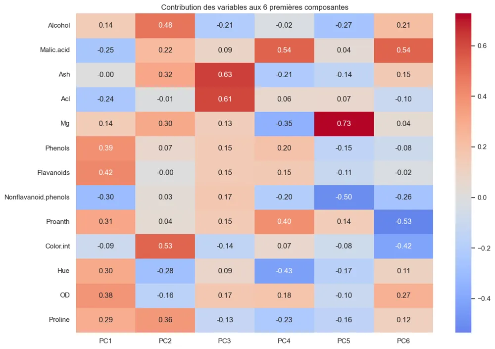
Démo : compresser une image par ACP
Comme dans le TD : chaque ligne de pixels est un individu, chaque colonne une variable. On garde les k premières composantes et on reconstruit avec inverse_transform. L’image du TD n’est pas reprise ici (visuel sous droits) : choisis une capture de mes projets, ou une image à toi qui reste sur ton appareil.
Dans une première cellule, j’ai appliqué la PCA à iris.corr() (la matrice de corrélation 4×4) au lieu des 150 fleurs : on obtient « 98,7 % sur PC1 », un chiffre faux. L’ACP s’applique aux individus standardisés ; refaite correctement : 72,96 % puis 95,81 % cumulés.
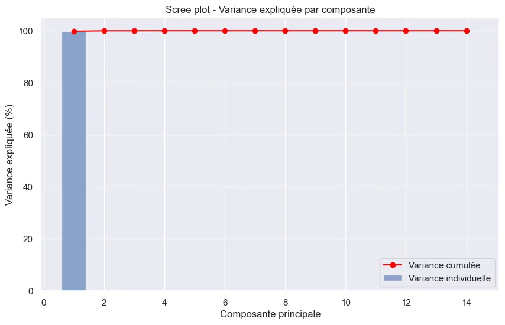
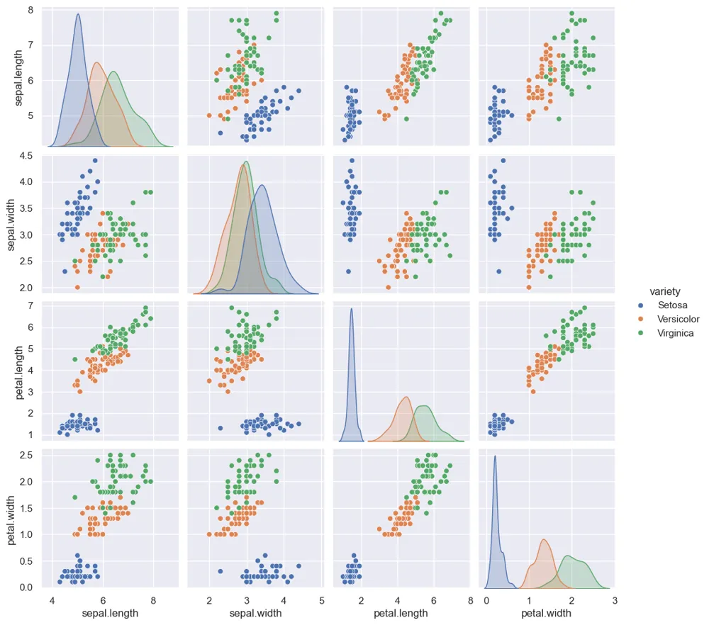
Régression linéaire et descente de gradient
Prédire la pluie à partir de la température puis de l’humidité, évaluer le modèle (MSE, RMSE, MAE), puis retrouver les coefficients par descente de gradient codée de zéro.
def gradient_descent(X, Y, learning_rate=0.01, n_iter=1000):
a = 0
b = 0
n = len(X)
L = []
for it in range(n_iter):
da = 0
db = 0
for i in range(n):
pred = a * X[i] + b
erreur = pred - Y[i]
da += erreur * X[i]
db += erreur
da = (2/n) * da
db = (2/n) * db
a = a - learning_rate * da
b = b - learning_rate * db
L.append([it, a, b, ((1/n) * sum((a*X[i]+b - Y[i])**2 for i in range(n)))])
return a, b, L
x_min, x_max = min(x), max(x)
x_norm = [(xi - x_min) / (x_max - x_min) for xi in x]
a, b, L_gradiant_result = gradient_descent(x_norm, y, learning_rate=0.5, n_iter=100)
Démo : ma descente de gradient, pas à pas
La fonction ci-dessus traduite ligne pour ligne. Avec l’humidité, un pas de 0,5 et 100 itérations, on retrouve exactement les valeurs du notebook : a = 7,5451, b = 1,8212, MSE = 108,0229.
La descente de gradient du notebook tourne sur l’humidité, pas sur la température : la cellule précédente avait réaffecté x. Dans un notebook, l’ordre d’exécution compte ; renommer les variables (x_temp, x_hum) évite ce genre de surprise.
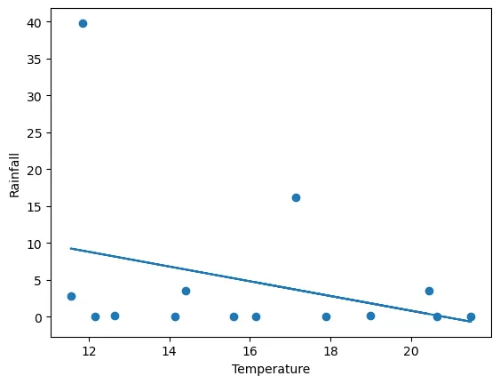
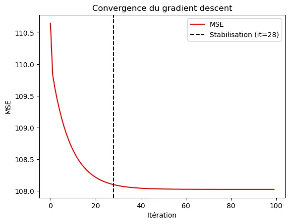
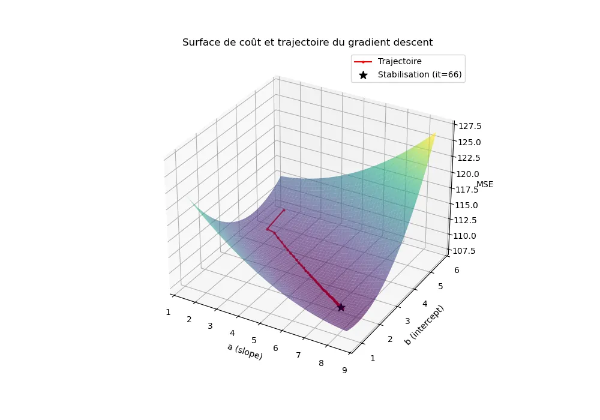
Régression multiple : l’équation normale
Sur 100 000 points générés avec w = [2 ; 3,4], np.linalg.inv(X.T @ X) @ X.T @ Y retrouve [2,008 ; 3,417]. Le biais b = 4,2 n’est pas estimé : il manquait une colonne de 1 dans X.
Classification : régression logistique, arbres et perceptron
Régression logistique évaluée (matrice de confusion, ROC), forêt aléatoire sur Iris, puis le perceptron et le problème du XOR.
Démo : le seuil de décision
Les 100 points de test du TD (régénérés avec np.random.seed(0)) et les probabilités du modèle. Déplace le seuil : la matrice de confusion, le rappel et la précision changent, la courbe ROC non. Relancé ici, le modèle obtient 0,99 d’exactitude et 0,979 de rappel (1,0 dans mon notebook : l’écart vient de la version de scikit-learn).
- Le
StandardScalerest calculé, mais le modèle est entraîné surX_trainau lieu deX_train_s. - Le modèle « polynomial » est entraîné sur
X_trainau lieu deX_train_p: c’est en fait le même modèle linéaire, d’où des scores identiques.
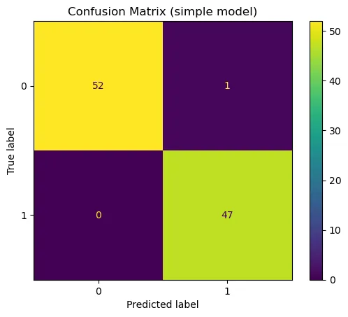
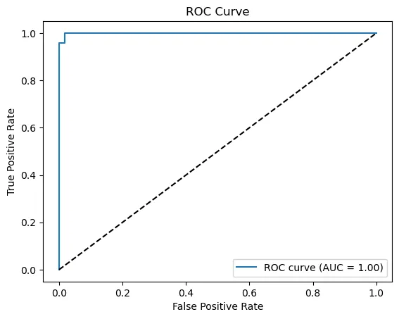
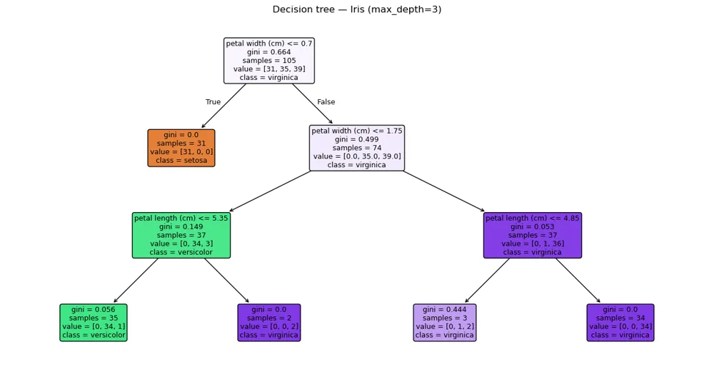
Importance des variables (forêt de 100 arbres) : longueur du pétale 0,46, largeur du pétale 0,41, longueur du sépale 0,10, largeur du sépale 0,03.
Démo : perceptron et XOR
Ma fonction train() (pas de 0,1, 1000 époques) et mon réseau entraîné par rétropropagation (sigmoïde, pas de 0,5, 10 000 époques), en JavaScript. Le fond montre la décision du modèle sur tout le plan.
# MÉTHODE 1 : plusieurs perceptrons assemblés à la main
# XOR(a, b) = AND( OR(a, b), NAND(a, b) )
w_or, b_or = train(X, np.array([0, 1, 1, 1])) # neurone caché 1
w_nand, b_nand = train(X, np.array([1, 1, 1, 0])) # neurone caché 2
H = np.column_stack([neuron(X, w_or, b_or), neuron(X, w_nand, b_nand)])
w_and, b_and = train(H, np.array([0, 1, 1, 0])) # neurone de sortie
# MÉTHODE 2 : vrai réseau 2 -> 2 -> 1 entraîné par rétropropagation
for epoch in range(10000):
H = sigmoid(X @ W1 + b1) # propagation avant
out = sigmoid(H @ W2 + b2)
err_out = (out - Y) * out * (1 - out) # erreur du neurone de sortie
err_hid = (err_out @ W2.T) * H * (1 - H) # erreur renvoyée aux neurones cachés
W2 -= lr * H.T @ err_out # descente de gradient
b2 -= lr * err_out.sum(axis=0, keepdims=True)
W1 -= lr * X.T @ err_hid
b1 -= lr * err_hid.sum(axis=0, keepdims=True)
Réseau de neurones convolutif sur Fashion-MNIST
60 000 images de vêtements en 28×28, 10 classes. Un CNN d’une couche de convolution, entraîné 75 époques.
cnn_model = Sequential([
Conv2D(filters=32, kernel_size=3, activation='relu', input_shape=image_shape),
MaxPooling2D(pool_size=2),
Dropout(0.2),
Flatten(),
Dense(32, activation='relu'),
Dense(10, activation='softmax')
])
cnn_model.compile(loss='sparse_categorical_crossentropy', optimizer='AdamW', metrics=['accuracy'])
history = cnn_model.fit(x_train, y_train, batch_size=4096, epochs=75,
validation_data=(x_validate, y_validate))
Démo : le CNN qui tourne dans ton navigateur
Même architecture, même découpage et mêmes réglages, réentraînée pour cette page (exactitude test : 91,51 %, contre 90,73 % dans mon notebook), puis exportée (≈ 340 Ko). La convolution, le max-pooling et les couches denses sont recalculés en JavaScript, sans bibliothèque.
Clique sur une image de test (bordure rouge = erreur du modèle), ou dessine ci-dessous.
Dessine un vêtement en blanc, en remplissant bien le cadre comme les images du jeu de données.
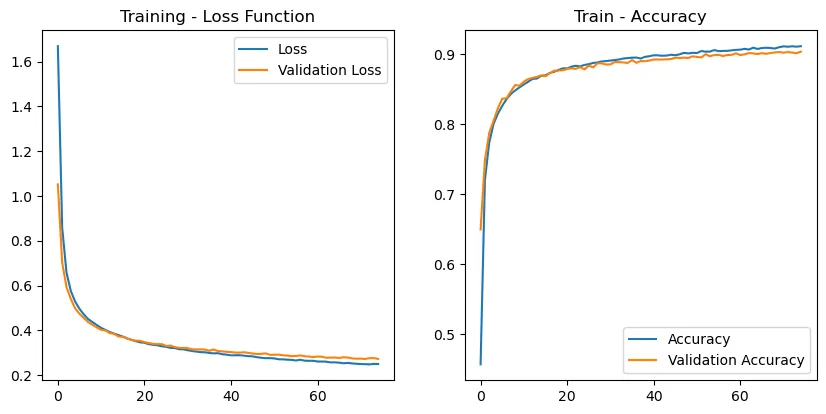
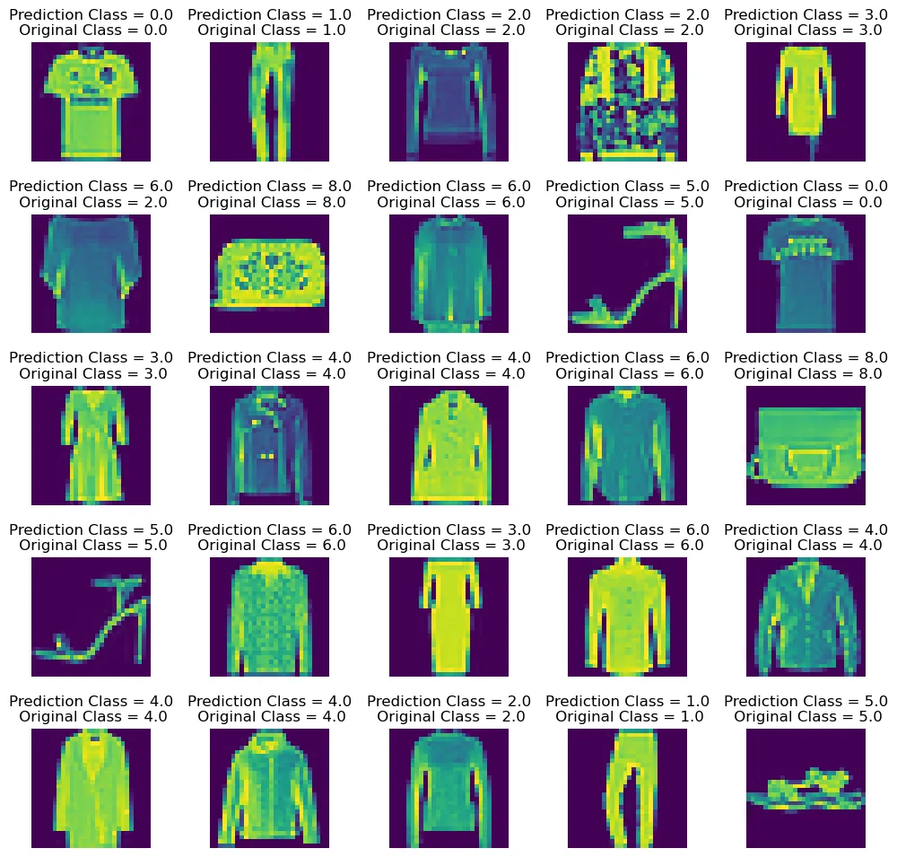
Perceptron multicouche contre CNN sur CIFAR-10
50 000 images couleur 32×32 en 10 classes. Le même problème, deux architectures.
| Modèle | Paramètres | Exactitude test |
|---|---|---|
| MLP : Flatten → 256 → 128 → 64 → 10 | 828 490 | 47,54 % |
| CNN : 3 blocs (2 Conv + BatchNorm + MaxPool), Dense 1024 | 2 397 226 | 83,87 % |
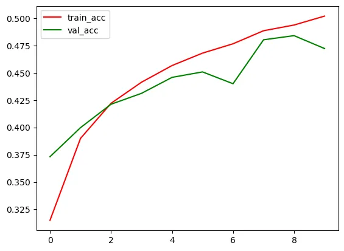
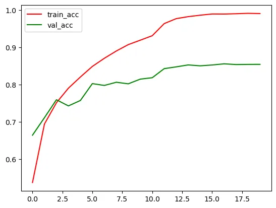
Le CNN exploite la proximité des pixels (filtres locaux partagés) là où le MLP traite 3 072 valeurs indépendantes. BatchNormalization stabilise l’entraînement, EarlyStopping garde les meilleurs poids, ReduceLROnPlateau divise le pas par 10 quand la validation stagne.
Séquences : RNN, LSTM et Transformer
Prédire le mot suivant dans Les Aventures de Sherlock Holmes (domaine public, Project Gutenberg) : 109 137 séquences de 10 mots, vocabulaire de 5 000 mots.
| Modèle | Paramètres | Époques | Temps | Val. loss | Val. exactitude | Perplexité |
|---|---|---|---|---|---|---|
| SimpleRNN | 989 704 | 13 | 270 s | 5,400 | 13,5 % | 221 |
| LSTM | 1 063 816 | 15 | 505 s | 5,371 | 14,5 % | 215 |
| Transformer | 695 688 | 14 | 458 s | 5,370 | 13,9 % | 215 |
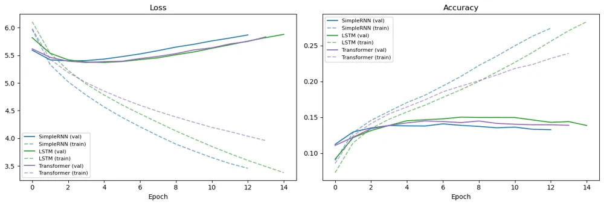
Génération de texte (amorce : « the detective think that the case is »)
Le mode glouton tourne en boucle, une température élevée produit du texte incohérent, la recherche en faisceau trouve des phrases plus probables. Les trois modèles font jeu égal ici : avec 10 mots de contexte, la mémoire longue du LSTM et l’attention du Transformer n’ont pas l’occasion de faire la différence.
class TransformerBlock(layers.Layer):
# self-attention + feed-forward, each followed by residual connection and normalization
def __init__(self, embed_dim, num_heads, ff_dim, rate=0.1, **kwargs):
super().__init__(**kwargs)
self.att = layers.MultiHeadAttention(num_heads=num_heads, key_dim=embed_dim)
self.ffn = Sequential([layers.Dense(ff_dim, activation='relu'), layers.Dense(embed_dim)])
self.norm1 = layers.LayerNormalization(epsilon=1e-6)
self.norm2 = layers.LayerNormalization(epsilon=1e-6)
self.drop1 = layers.Dropout(rate)
self.drop2 = layers.Dropout(rate)
def call(self, inputs, training=False):
attn_output = self.att(inputs, inputs) # each word looks at every word
attn_output = self.drop1(attn_output, training=training)
out1 = self.norm1(inputs + attn_output) # residual connection (Add & Norm)
ffn_output = self.ffn(out1)
ffn_output = self.drop2(ffn_output, training=training)
return self.norm2(out1 + ffn_output)
Detailed write-ups and revision notes are in French: they are my own study notes.
Fiche de révision
Les notions des TD1 à TD8, avec les formules à connaître et mes propres résultats comme exemples. Le quiz et les cartes sont en bas de page.
1. NumPy et bases de Python
| Opération | Ce qu’elle calcule | [[1,2],[3,4]] et [[5,6],[7,8]] |
|---|---|---|
np.dot(A, B) / A @ B | Produit matriciel (ligne × colonne) | [[19, 22], [43, 50]] |
np.multiply(A, B) / A * B | Élément par élément | [[5, 12], [21, 32]] |
np.inner(A, B) | Ligne de A · ligne de B | [[17, 23], [39, 53]] |
np.outer(A, B) | Chaque élément × chaque élément (aplatis) | matrice 4×4 |
- Moyenne x̄ = Σxᵢ / n · variance σ² = Σ(xᵢ − x̄)² / n · écart-type σ = √σ² · médiane = valeur centrale après tri (moyenne des deux centrales si n est pair).
/division réelle,//division entière (vers le bas),%reste : 4 / 3,5 = 1,14 ; 4 // 3,5 = 1,0 ; 4 % 3,5 = 0,5.tandonne un rapport à partir d’un angle (en radians),arctanfait l’inverse :np.degrees(np.arctan(1))= 45.np.random.seed(n)fixe le hasard : mêmes tirages à chaque exécution (reproductibilité).np.linspace(a, b, n): n points régulièrement espacés de a à b inclus ;np.arange: avec un pas, b exclu.
Pour une médiane faite à la main, trier d’abord le tableau. np.median le fait pour toi.
2. Threads, processus et vitesse de calcul
| Outil | Principe | Quand l’utiliser |
|---|---|---|
| Vectorisation NumPy | Opérations sur tout le tableau, en C | Toujours en premier choix |
threading | Plusieurs fils dans un même processus (mémoire partagée) ; le GIL empêche le vrai parallélisme du Python pur | Attentes (réseau, fichiers, sleep) |
multiprocessing, Joblib | Plusieurs processus, un par cœur ; coût de démarrage et de copie des données | Gros calculs CPU |
Numba @njit | Compile la fonction en code machine au premier appel (JIT) | Boucles numériques lourdes |
| Dask | Découpe un tableau en morceaux (chunks) traités en parallèle | Données plus grandes que la mémoire |
Le parallélisme a un coût fixe. Mesuré au TD1 : 944 ns en séquentiel contre 11 ms avec Joblib pour 16 racines carrées. Il ne paie que si chaque tâche est longue.
%timeitrépète la mesure et donne moyenne ± écart-type.- Thread = unité d’exécution légère dans un processus ; cœur = unité matérielle qui exécute des instructions.
- Octets → Go : diviser par 1024³.
3. Analyse exploratoire avec pandas
df = pd.read_csv("fichier.csv", sep=";", encoding="latin1")
df.head(10); df.tail(10) # premières / dernières lignes
df.shape; df.dtypes; df.info() # taille, types, valeurs non nulles
df.describe() # moyenne, écart-type, quartiles
df.isna().sum() # valeurs manquantes par colonne
df = df[df["libmarq"] != "x"] # filtrer des lignes
df = df.drop(["libmarq"], axis=1) # supprimer une colonne
df.groupby("Team")["Salary"].sum().sort_values(ascending=False)
df.nlargest(10, "Global_Sales")
.loc[label]sélectionne par étiquette d’index (et de colonne) ;.iloc[i]par position (0, 1, 2…). Après un filtrage, l’étiquette 369835 n’est plus à la position 369835.- Valeur extrême (boîte à moustaches) : en dehors de [Q1 − 1,5 × IQR ; Q3 + 1,5 × IQR], avec IQR = Q3 − Q1.
| Objectif | Graphique |
|---|---|
| Évolution dans le temps | plot |
| Comparer des catégories | bar / barh (noms longs) |
| Distribution d’une variable | hist, boxplot, violinplot |
| Relation entre deux variables | scatter |
| Proportions, peu de catégories | pie |
| Matrice (corrélations) | imshow, sns.heatmap |
| Toutes les paires de variables | sns.pairplot |
Une colonne numérique qui contient un texte (« tbd ») devient object : convertir avec pd.to_numeric(..., errors="coerce").
4. Analyse en composantes principales (ACP)
- Standardiser chaque variable : z = (x − moyenne) / écart-type. Sans ça, la variable de plus grande échelle (Proline ≈ 1000) écrase les autres (Hue ≈ 1).
- Calculer la matrice de covariance (ou de corrélation) des variables standardisées.
- Ses vecteurs propres sont les axes principaux, ses valeurs propres la variance portée par chaque axe.
- Trier par variance décroissante, garder k axes, projeter les individus dessus.
- Variance expliquée de l’axe k = λₖ / Σλ. On choisit k avec le scree plot (coude) ou un seuil de variance cumulée (90 %, 95 %).
- Loadings = coordonnées des vecteurs propres : quelles variables construisent chaque axe (Wine : Flavanoids, Phenols et OD pour PC1 ; Color.int et Alcohol pour PC2).
- Les composantes sont non corrélées entre elles ; l’ACP est linéaire et non supervisée (elle ignore les classes).
- Image : chaque ligne de pixels = un individu. Garder k composantes = compresser ;
inverse_transformreconstruit. Débruitage : le bruit se loge dans les dernières composantes, on les met à zéro.
X_scaled = StandardScaler().fit_transform(X) pca = PCA(n_components=k) scores = pca.fit_transform(X_scaled) # coordonnées des individus pca.explained_variance_ratio_ # part de variance par axe pca.components_ # vecteurs propres (loadings) X_rec = pca.inverse_transform(scores) # reconstruction
5. Régression linéaire et descente de gradient
- Modèle : ŷ = wᵀx + b. Moindres carrés : minimiser ‖y − Xw‖².
- Équation normale : w* = (XᵀX)⁻¹ Xᵀy (solution unique si XᵀX est inversible). Ajouter une colonne de 1 à X pour estimer le biais.
- Descente de gradient sur MSE = (1/n) Σ(a·xᵢ + b − yᵢ)² :
∂MSE/∂a = (2/n) Σ eᵢ·xᵢ ; ∂MSE/∂b = (2/n) Σ eᵢ ; puis a ← a − η·∂a et b ← b − η·∂b. - Le pas η : trop grand, ça diverge ; trop petit, c’est lent. Normaliser x (min-max dans [0, 1]) rend la surface de coût mieux conditionnée.
stats.linregress(x, y)renvoie pente, ordonnée, r, p-value et erreur standard. p = 0,28 au TD4 : la pente n’est pas significative.- Mini-batch SGD : le gradient est calculé sur un petit lot à chaque pas (plus rapide, plus bruité).
| Métrique | Formule | Lecture |
|---|---|---|
| MSE | (1/n) Σ(ŷ − y)² | Pénalise fort les grosses erreurs |
| RMSE | √MSE | Dans l’unité de y |
| MAE | (1/n) Σ|ŷ − y| | Moins sensible aux valeurs extrêmes |
| R² | 1 − SS_res / SS_tot | Part de variance expliquée (1 = parfait) |
| r | cov(x, y) / (σx σy) | Corrélation linéaire, entre −1 et 1 ; r² = R² en régression simple |
6. Régression logistique
- z = θ₀ + θ₁x₁ + … + θₙxₙ, puis probabilité p = σ(z) = 1 / (1 + e⁻ᶻ), entre 0 et 1.
- Prédiction : 1 si p ≥ 0,5 (seuil réglable), sinon 0. La frontière de décision z = 0 est une droite (un hyperplan).
- Coût : entropie croisée J(θ) = −(1/m) Σ [y log p + (1 − y) log(1 − p)], minimisée par descente de gradient.
PolynomialFeatures(degree=3)ajoute des termes x₁², x₁x₂… : la frontière devient courbe.- Normaliser :
fit_transformsur le train,transformseulement sur le test (jamais de fit sur le test).
7. Évaluer un classifieur
| prédit 0 | prédit 1 | |
|---|---|---|
| réel 0 | VN (vrai négatif) | FP (faux positif) |
| réel 1 | FN (faux négatif) | VP (vrai positif) |
- Exactitude (accuracy) = (VP + VN) / total : trompeuse si les classes sont déséquilibrées.
- Rappel (recall, sensibilité) = VP / (VP + FN) : part des positifs retrouvés. À privilégier quand rater un positif coûte cher (dépistage).
- Précision = VP / (VP + FP) : part des alertes justes.
- F1 = 2 · précision · rappel / (précision + rappel).
- Courbe ROC : taux de vrais positifs en fonction du taux de faux positifs, pour tous les seuils. AUC = aire sous la courbe : 0,5 = hasard, 1 = parfait.
- Découpage train / validation / test : on règle sur la validation, on rend compte une seule fois sur le test.
8. Arbres de décision et forêts aléatoires
- Un arbre pose des questions « variable ≤ seuil ? » qui séparent au mieux les classes (critère de Gini ou entropie).
max_depthlimite la profondeur pour éviter le par-cœur. - Forêt aléatoire : beaucoup d’arbres entraînés sur des échantillons tirés au hasard (bagging) et des sous-ensembles de variables ; on vote. Plus robuste qu’un arbre seul.
feature_importances_: contribution de chaque variable aux découpes (Iris : les pétales).
9. Perceptron, XOR et rétropropagation
- Perceptron : sortie = step(w·x + b). Règle d’apprentissage : w ← w + η (y − ŷ) x et b ← b + η (y − ŷ).
- Il ne sait séparer que des classes linéairement séparables (AND, OR, NAND oui ; XOR non : aucune droite ne sépare (0,1),(1,0) de (0,0),(1,1)).
- Solution : une couche cachée. À la main, XOR = AND(OR, NAND) ; ou un réseau 2-2-1 entraîné.
- Rétropropagation : on remplace la marche (non dérivable) par une sigmoïde σ, de dérivée σ(1 − σ). L’erreur de sortie est renvoyée vers les neurones cachés (règle de dérivation en chaîne), puis chaque poids descend son gradient.
- Avec 2 neurones cachés, l’entraînement peut rester bloqué (sorties à 0,5) : minimum local. 4 neurones cachés convergent presque toujours.
| Activation | Formule | Usage |
|---|---|---|
| Sigmoïde | 1 / (1 + e⁻ˣ) | Sortie binaire (probabilité) |
| Tanh | (eˣ − e⁻ˣ) / (eˣ + e⁻ˣ) | Cachée, centrée en 0 (RNN) |
| ReLU | max(0, x) | Couches cachées des réseaux profonds |
| Softmax | eᶻⁱ / Σ eᶻʲ | Sortie multiclasse (somme = 1) |
10. Entraîner un réseau de neurones
- Époque = un passage sur tout le jeu d’entraînement ; lot (batch) = nombre d’exemples par mise à jour des poids. 48 000 images en lots de 4096 → 12 pas par époque.
- Perte :
sparse_categorical_crossentropysi les étiquettes sont des entiers,categorical_crossentropysi elles sont en one-hot. - Optimiseurs : SGD (± momentum), Adam, AdamW (Adam + décroissance de poids découplée), RMSprop…
- Surapprentissage : la perte d’entraînement baisse mais celle de validation remonte. Remèdes : Dropout, plus de données, régularisation, EarlyStopping.
- EarlyStopping(patience,
restore_best_weights=True) arrête quand la validation ne s’améliore plus et garde les meilleurs poids. ReduceLROnPlateau réduit le pas quand la validation stagne. - BatchNormalization normalise les activations d’une couche par lot : entraînement plus rapide et plus stable.
- Normaliser les pixels (÷ 255) et appliquer exactement le même prétraitement au test.
11. Réseaux convolutifs (CNN)
- Convolution : un filtre (noyau 3×3) glisse sur l’image ; chaque position donne une somme pondérée. Les poids sont partagés sur toute l’image : peu de paramètres, détection des motifs où qu’ils soient.
- Taille de sortie = (n − k + 2p) / s + 1 : 28×28, noyau 3, sans padding, pas 1 → 26×26.
padding='same'garde la taille. - Max-pooling 2×2 : garde le maximum de chaque bloc, divise la taille par 2 (26 → 13).
- Flatten → couches denses → softmax sur les classes.
| Couche du TD6 | Sortie | Paramètres |
|---|---|---|
| Conv2D 32 filtres 3×3 | 26×26×32 | 3×3×1×32 + 32 = 320 |
| MaxPooling2D 2×2 | 13×13×32 | 0 |
| Dropout 0,2 · Flatten | 5 408 | 0 |
| Dense 32 (ReLU) | 32 | 5 408×32 + 32 = 173 088 |
| Dense 10 (softmax) | 10 | 32×10 + 10 = 330 |
| Total | 173 738 | |
(hauteur × largeur du noyau × canaux d’entrée + 1) × nombre de filtres. Une Dense : (entrées + 1) × sorties.
12. Séquences : RNN, LSTM, Transformer
- Embedding : chaque mot (un entier) devient un vecteur appris ; des mots aux contextes proches ont des vecteurs proches.
- RNN : hₜ = tanh(Wₓ xₜ + Wₕ hₜ₋₁ + b), mêmes poids à chaque pas. Limite : le gradient s’évanouit en remontant le temps (vanishing gradient), le début des longues séquences est oublié.
- LSTM : une cellule mémoire cₜ et trois portes (oubli, entrée, sortie). cₜ = fₜ ⊙ cₜ₋₁ + iₜ ⊙ c̃ₜ ; mise à jour par addition, le gradient circule mieux. 4 fois plus de paramètres qu’un RNN de même taille.
- Transformer : plus de récurrence, tous les mots en parallèle. Attention(Q, K, V) = softmax(QKᵀ / √dₖ) V. Multi-têtes : plusieurs attentions en parallèle. Encodage de position obligatoire, connexions résiduelles + LayerNorm.
- Perplexité = e^loss : nombre moyen de mots entre lesquels le modèle hésite (≈ 215 au TD8, sur 5 000 mots).
- Génération : glouton (le plus probable, boucle), température (< 1 prudent, > 1 créatif), top-k, top-p (noyau), recherche en faisceau (beam search).